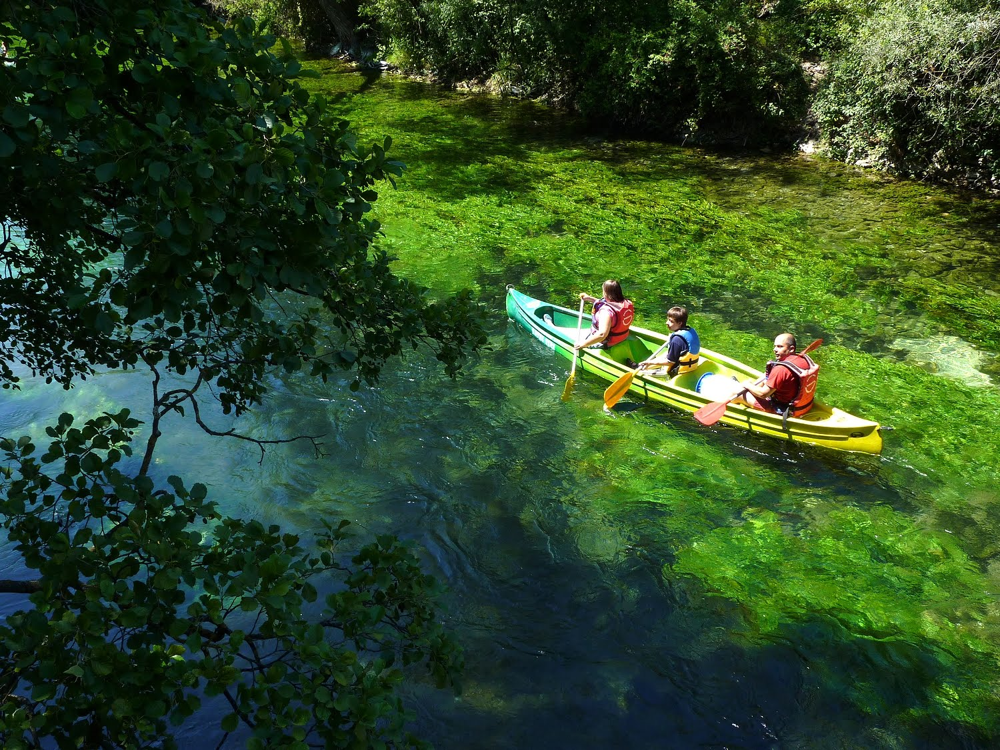

Mes Projets
SAÉ 1.04 : Création d’une base de données
Lors de la SAE 1.04, je devais par équipe de 3 réaliser et gérer la base de données d’une entreprise fictive de location internationale sur une durée d’un mois. J’ai choisi une entreprise de location de canoës et de kayaks. Sur ce projet, j’ai dû réaliser un modèle logique de données (MLD). J’ai aussi participé à l’écriture du script et des requêtes pour créer les tables et aider pour le jeu de données avec le langage SQL.


Concernant la partie économie et durable, j’ai relevé les différents acteurs impliqués dans notre activité et expliqué en quoi le travail de nos données était important pour notre entreprise. J’ai apporté à mon équipe une bonne cohésion, de la motivation, et un partage de mes compétences techniques afin de pouvoir aider un maximum mes collègues.
SAÉ 1.02 : Comparaison d’approches algorithmiques
Lors de la SAE 1.02, je devais par équipe de 2 réaliser un jeu avec le langage de programmation C sur une durée d'un mois. Il consistait en un joueur qui devait affronter deux groupes de monstres. A chaque tour, le joueur devait choisir entre pierre, feuille et ciseaux, contre un monstre qui choissait également mais aléatoirement. Si le joueur gagnait, alors il pouvait lui infliger des dégâts. À la fin, son score était stocké dans un fichier de sauvegarde, qu'il pouvait consulter grâce à un menu.

Pendant ce projet, j'ai réalisé de nombreuses tâches. J'ai codé les fonctions de gestion d'une partie, ainsi que la fonction de condition de victoire. J'ai aussi réalisé la fonction de tri des scores dans le fichier et celle pour afficher le menu. Enfin, je me suis assuré que le code était bien commenté et les erreurs gérées. J'ai apporté à mon équipe mes compétences techniques, mais aussi mon aide et ma motivation pour que le projet soit terminé dans les temps.